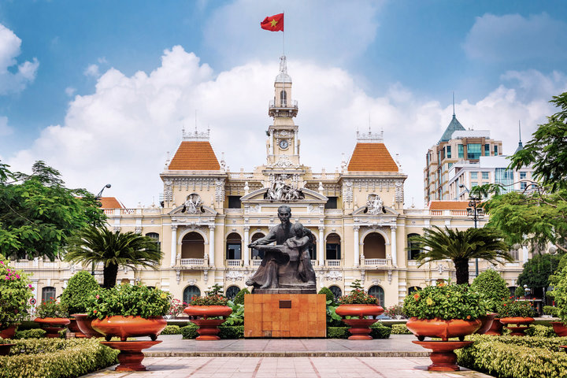
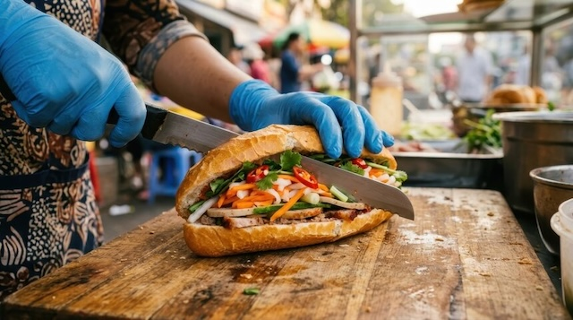
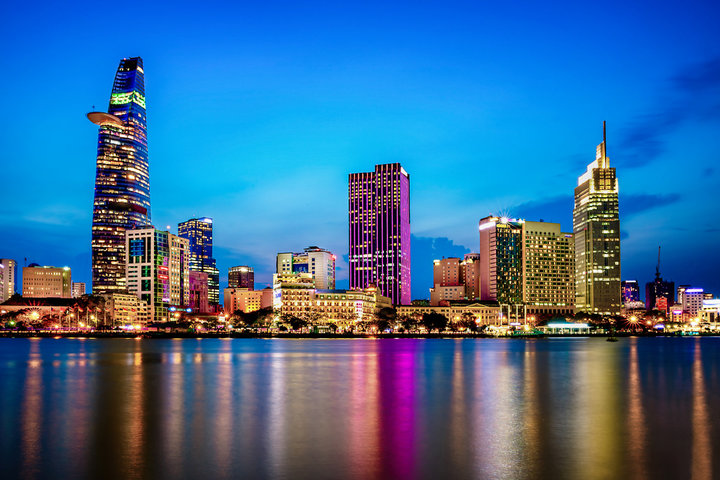

Ho Chi Minh City
Ho Chi Minh City, formerly known as Saigon, is the largest city in Vietnam. It is a bustling metropolis known for its French colonial architecture, vibrant street life, and historical landmarks such as the War Remnants Museum and Notre-Dame Cathedral Basilica of Saigon.
Ho Chi Minh Statue

Banh Mi is a popular Vietnamese sandwich that originated in Ho Chi Minh City. It typically consists of a crispy baguette filled with various ingredients such as grilled pork, pate, pickled vegetables, fresh herbs, and chili sauce.

Ho Chi Minh City Nightlife
